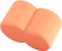
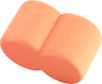
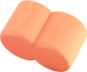

사훈
 

창의와 탐구 교육으로 큰 꿈을
갖는 어린이로 키우자
하연과학의 경영 이념인 고객중심의 가치 창조, 인간미 넘치는 교육, 하연 가족의 공동체 의식, 국내 최고의 어린이 창의 교육 실현, 신의 성실과 합리성을 바탕으로 학생들을 큰 꿈을 갖는 어린이로 키우겠습니다.

하연과학의 경영 이념인 고객중심의 가치 창조, 인간미 넘치는 교육, 하연 가족의 공동체 의식, 국내 최고의 어린이 창의 교육 실현, 신의 성실과 합리성을 바탕으로 학생들을 큰 꿈을 갖는 어린이로 키우겠습니다.

물음표는 어린이의 상상력에서 비롯된 호기심을, 새싹은 어린이의 무한한 가능성과 희망을, 초록색은 창의 교육을, 책은 배움에 대한 열정을, 청색은 도전정신을 나타냅니다.
호기심이 많아서 궁금한 것은 다 해결해야 하고 모르는 것이 있으면 질문하고 공부하여 알아내는 똑똑한 친구예요. 머리 위에 물음표와 새싹을 달고 다녀요.
하연이를 따라다니며 꽃에 관심이 많은 작은 민들레예요.
마법의 샘물에서 생겨났어요. 귀여운 모습 뒤에 장난끼가 숨어 있는 물방울이예요.